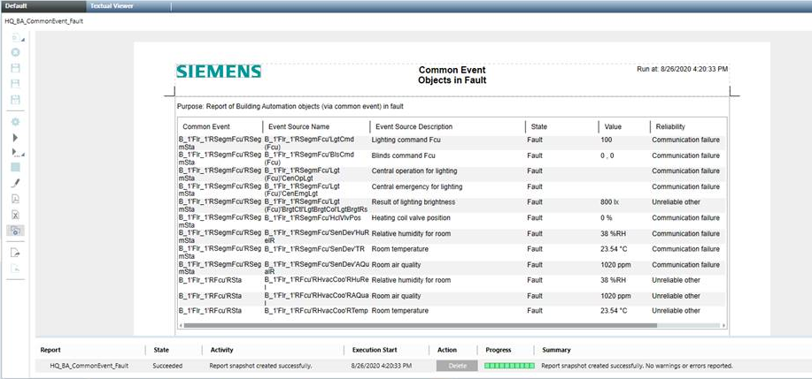

Execute Report for Common Event
- The Common Event reports are imported.
- The devices must be online to read out the data.
- In System Browser, select Application View.
- Select Applications > Reports > State.
- The Default tab displays.
- Select one of the default reports (covers the entire project):
- Common Event Objects in Fault
- Common Event Objects in Alarm
- Common Event Objects in Out Of Service (displays the state for Out of Service, Overridden, and Command)
- Click Run
 .
.
- The report starts and can be saved for further processing. The time required to generate the report is based on the project size and may take several minutes.
You can automate the report output, see Configure report output and Configure automatic report execution.


The TRA report provider supporting "Common Events", "Lighting", "Blinds" and "Rooms" reports, traces warnings with the data point names of the nodes that could not be read. To see these traces, follow the steps of the procedure below.
- Start the Trace viewer and go to Settings.
- Select the W-ReportMan.exe under Tracing EXE.
- Activate the WARNING checkbox in the Priority section.
- Under Modules activate the Reporting.Client.ReportSnapshot checkbox.
- Click OK.